Spotify
楽曲やサウンドを、いつでも聴ける音楽体験として届けます。
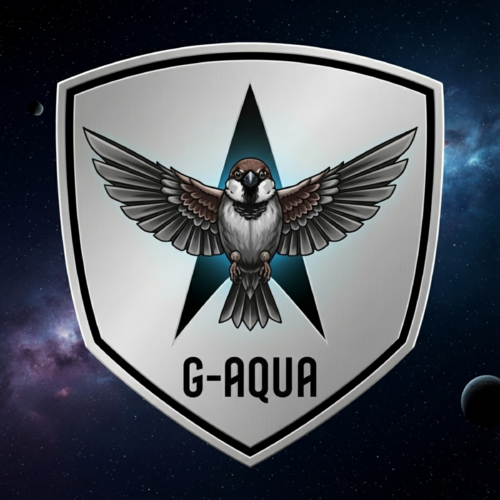
G-AQUASpotify / TuneCore / YouTube / SUZURI
音楽、映像、グッズを横断しながら、 ひとつの世界観を育てていくクリエイティブプロジェクト。
About
G-AQUAは、Spotifyでの楽曲展開、TuneCoreを通じた音楽配信、 YouTubeでの映像展開、SUZURIショップでのグッズ制作などを行う活動体です。 メディアごとに表情を変えながら、根にあるムードはひとつにつながっています。
Activity
楽曲やサウンドを、いつでも聴ける音楽体験として届けます。
楽曲やサウンドを配信し、G-AQUAの音の世界を各ストアへ届けます。
映像、音、言葉を組み合わせて、活動の雰囲気をより立体的に発信。
ロゴやアートワークを日常で楽しめるアイテムとして展開します。
Releases
G-AQUAは、童謡・季節感・やさしい物語性を軸にした楽曲をTuneCoreから継続的に配信しています。 「チュンチュン」シリーズや四季をテーマにした作品など、公開ページに掲載されているリリースをまとめています。
TuneCoreで一覧を見る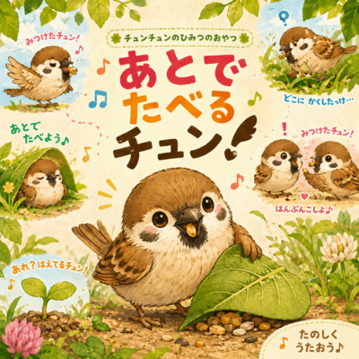
Single あとでたべるチュン！ 2026.06.24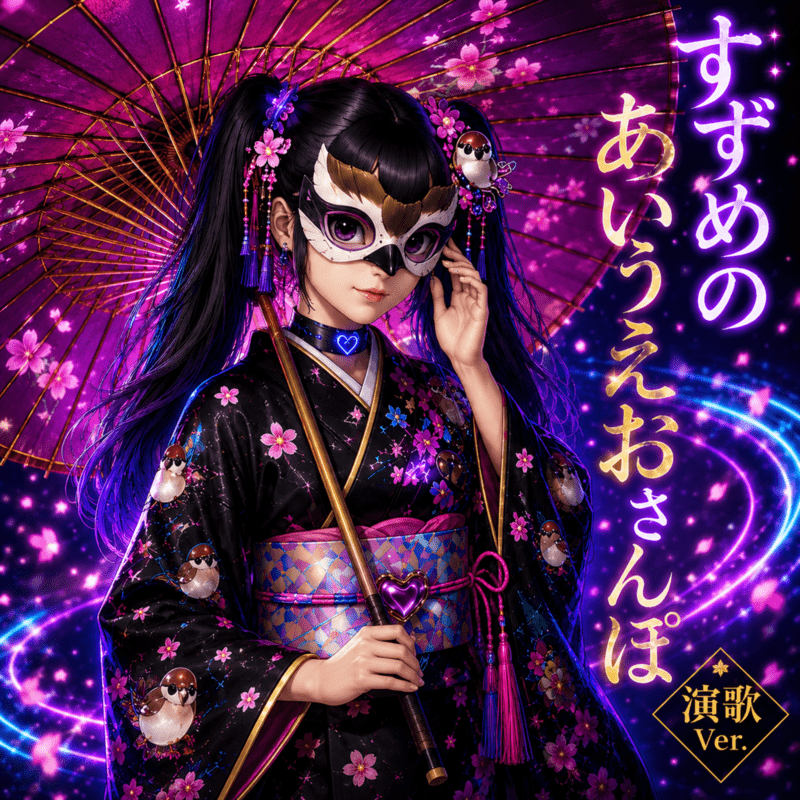
Single すずめのあいうえおさんぽ (演歌Ver.) 2026.05.19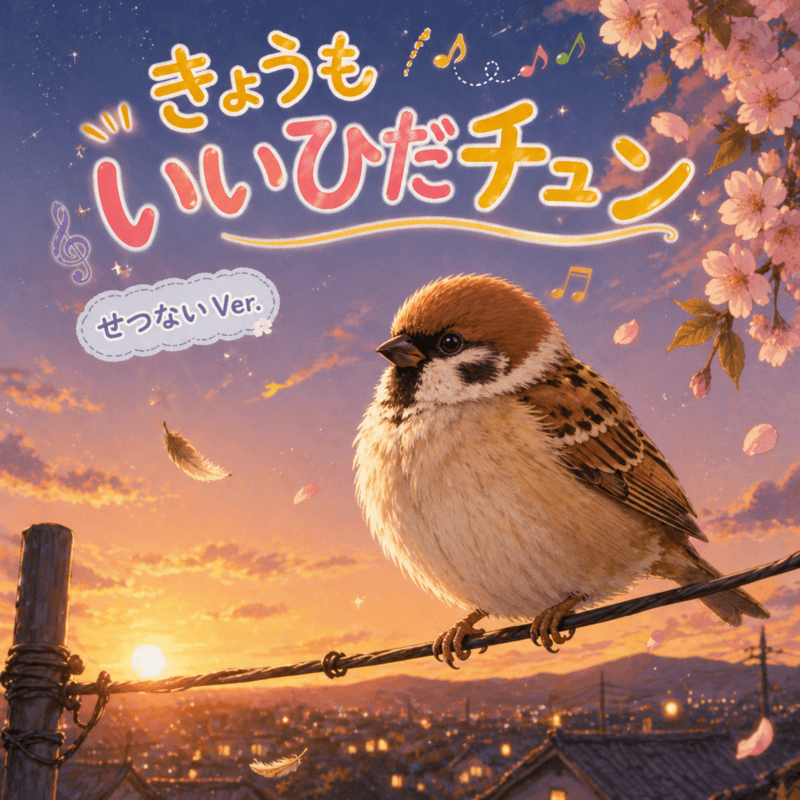
Single きょうもいいひだチュン (せつない Ver.) 2026.05.13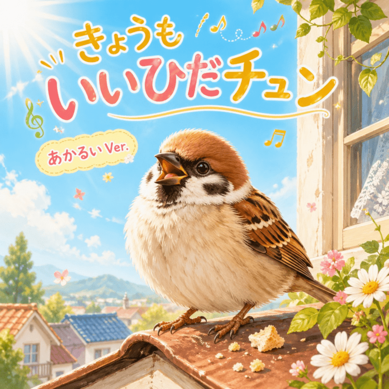
Single きょうもいいひだチュン (あかるい Ver.) 2026.05.13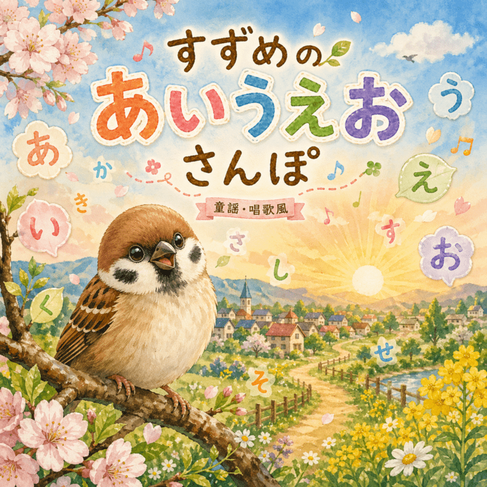
Single すずめの あいうえお さんぽ 2026.05.06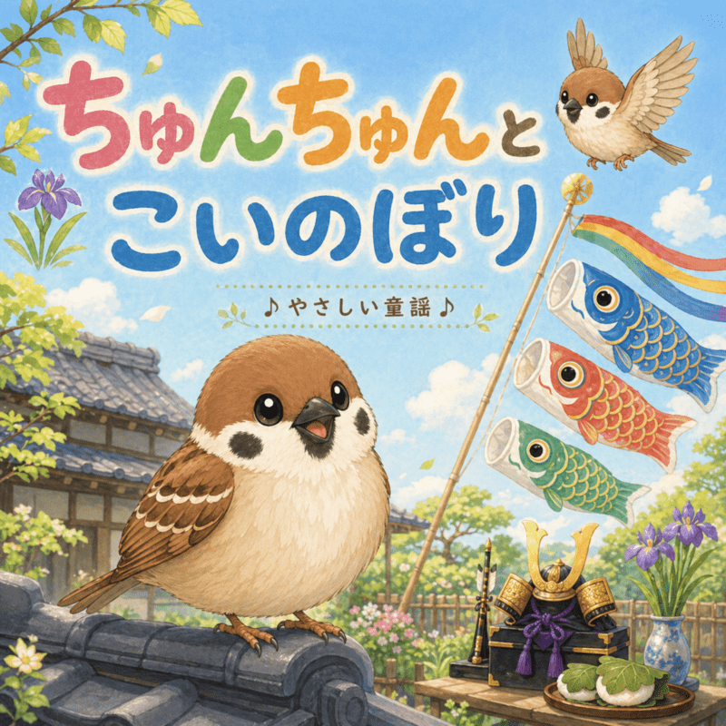
Single ちゅんちゅんとこいのぼり 2026.04.30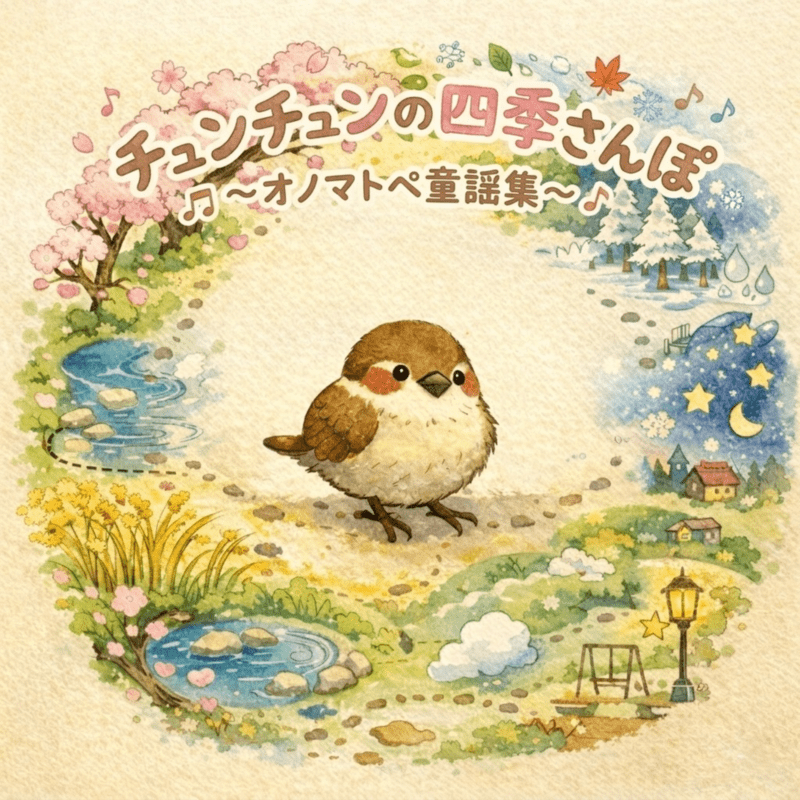
Album チュンチュンの四季さんぽ 〜オノマトペ童謡集〜 2026.04.15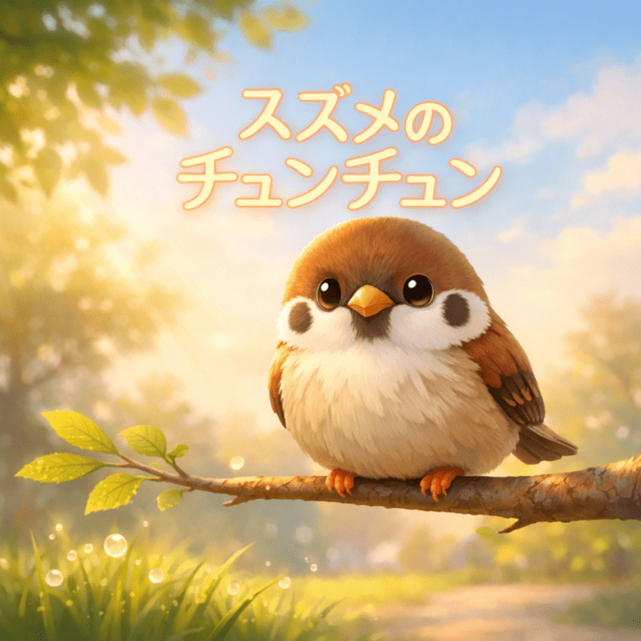
Single スズメのチュンチュン 2026.03.31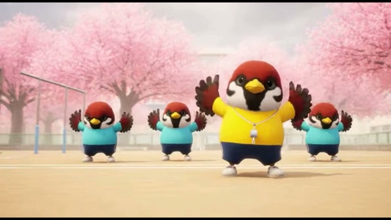
Music Video チュンチュン体操！！ 2026.02.05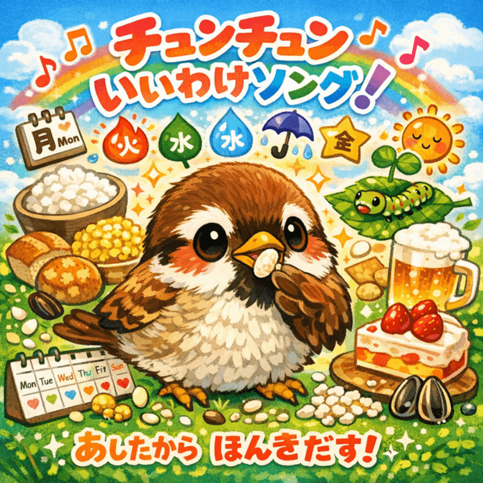
Single チュンチュンいいわけソング！ 2026.01.21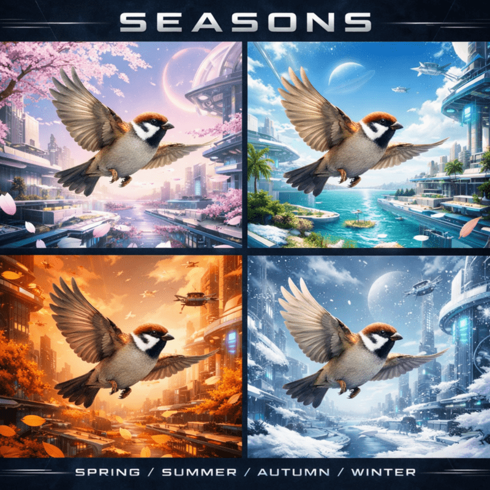
Single 春夏秋冬 (Remix) [春] 2026.01.14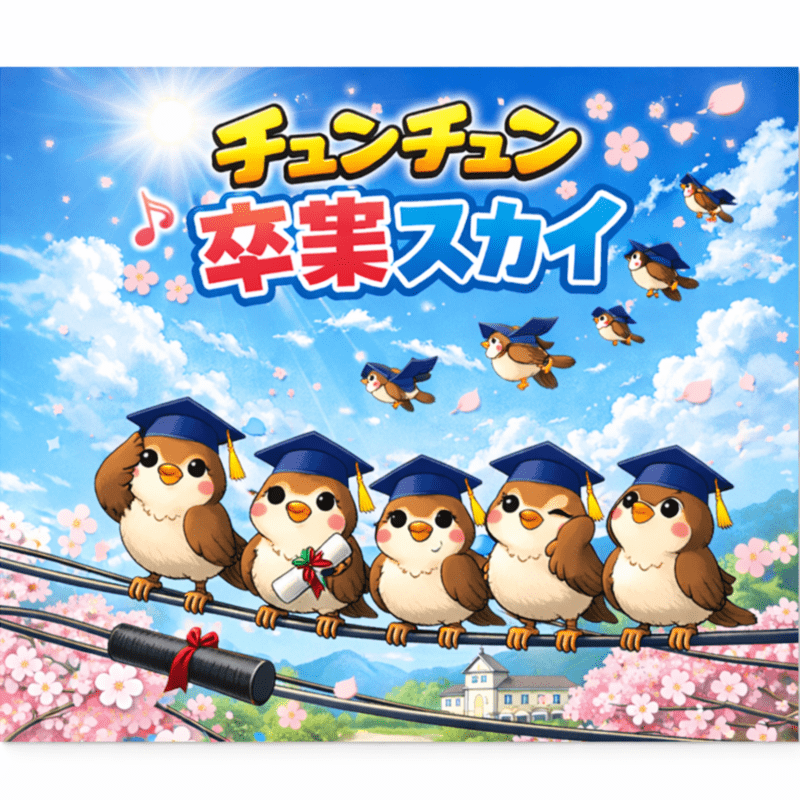
Single チュンチュン卒業スカイ 2026.01.07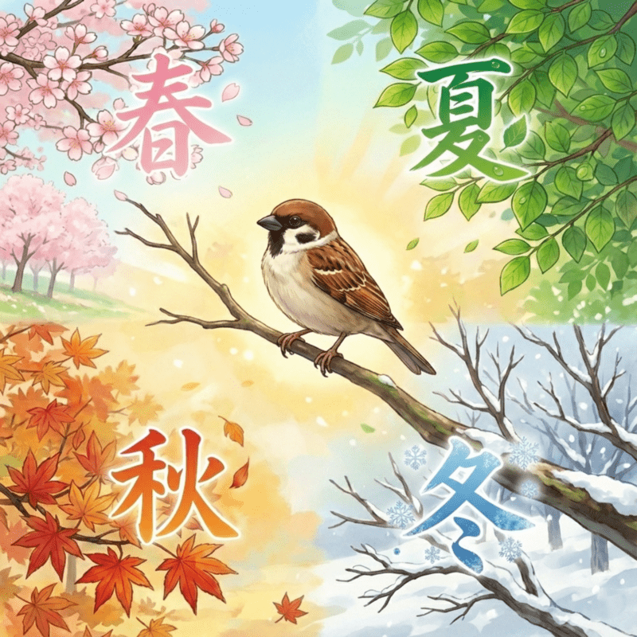
Single 春夏秋冬 2026.01.07Channel
G-AQUAの活動は、プラットフォームごとに違う楽しみ方ができます。 Spotifyで音に浸り、TuneCoreで活動を追い、YouTubeで眺め、ショップで日常へ持ち帰る。
YouTube
アクアちゃんねるでは、すずめのかわいい日常や、やさしい雰囲気のMV・Music Audioを公開しています。 G-AQUAの音楽世界を、映像でも楽しめる公式コンテンツです。
Shop
SUZURIショップでは、G-AQUAのロゴやすずめの世界観を使ったアイテムを販売しています。 気になる商品カードを選ぶと、SUZURIの商品ページへ移動できます。
SUZURIショップを見るLinks